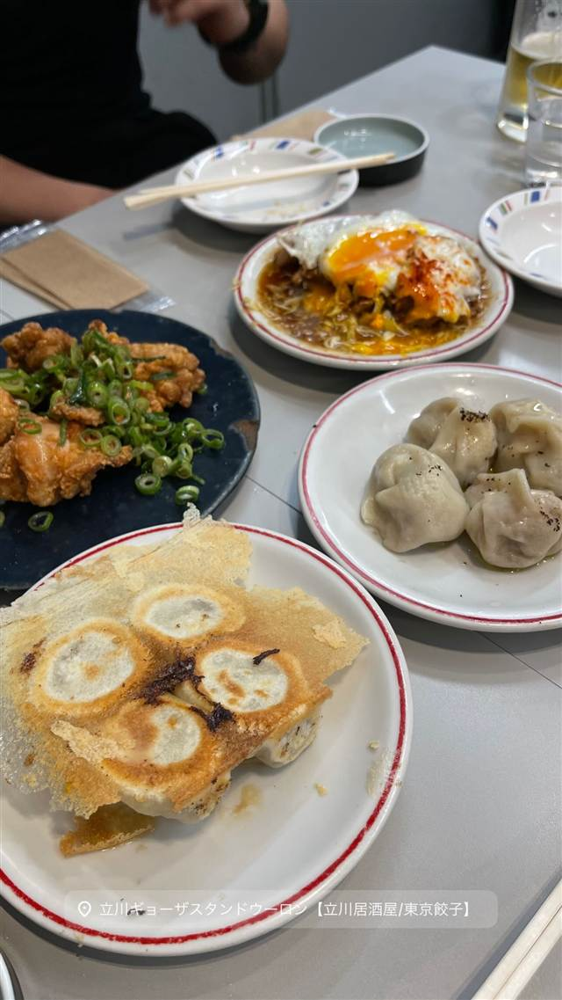
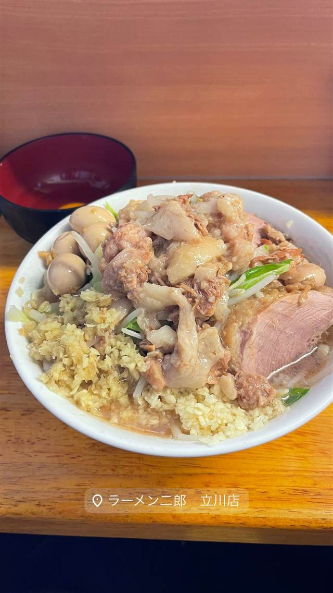
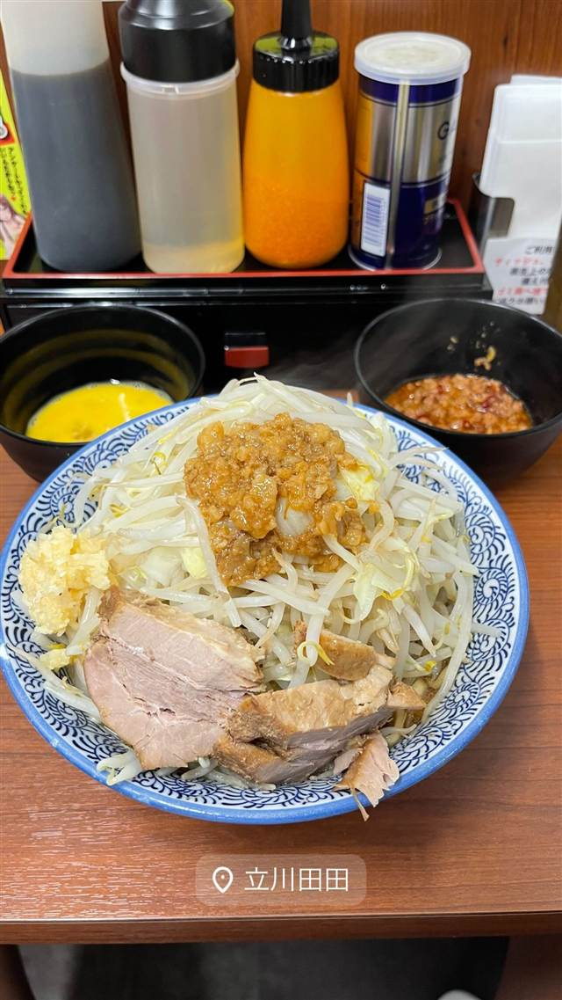

東京ギョーザスタンド ウーロン GREEN SPRINGS店
点心師とシェフが監修、烏龍茶で醸すクラフトビールと餃子
立川ギョーザスタンドウーロン【立川居酒屋/東京餃子】
立川GREEN SPRINGS内にある餃子とクラフトビールの店。ミシュランシェフと中国人点心師が皮から餡まで監修した手包み餃子と、烏龍茶葉で醸造したオリジナルビール「ウーロンエール」が名物。
TRIVIA
豆知識
- ビールは中国福建省産の烏龍茶葉を使って醸造したオリジナル「ウーロンエール」
- 東京駅グランスタ内など複数の姉妹店がある
REVIEWS
世間の評判
3.46食べログ
肉汁たっぷりの羽根つき餃子とビール
- 肉汁たっぷりでパリパリの羽根つき餃子の完成度を評価する声が多い
- チャーシューエッグや油淋鶏などつまみの豊富さを評価する声が多い
- クラフトビールが7種類あり季節限定の銘柄もあると評価する声がある
- 注文の取り忘れなど接客対応に不満を感じたという声も見られる
Retty 口コミ31件
| 創業 | 2022年3月26日オープン |
|---|---|
| 系譜 | 人気クラフトビール店「NIHONBASHI BREWERY」のオーナーが手がける新業態。ミシュラン経験のあるシェフと中国人点心師が餃子を監修 |
| 看板 | 手包み餃子（焼き・水餃子）とオリジナルクラフトビール「ウーロンエール」 |
| こだわり | スペイン産イベリコ豚バラと国産肩ロースの餡を店内で挽き、2種類の小麦粉を独自配合した皮を一枚ずつ手作り。中国福建省産の烏龍茶葉を使って醸造したクラフトビールを合わせる |
| どこから | 東京から1時間ほど |
| 予算 | 昼 ¥1,000～¥1,999 夜 ¥3,000～¥3,999 |
| 場所 | 立川駅 東京都立川市泉町1091 GREEN SPRINGS内 |
| メモ | テーブル24席・カウンター28席、GREEN SPRINGS1階に立地 |
食べたもの：餃子
NEARBY
近い店・同じ系統の店
-

★ 二郎系(直系) 立川南駅 ラーメン二郎 立川店 「マシマシ」と言わない、立川店だけの独特なコールルール 昼 ¥1,000～¥1,999 夜 ¥1,000～¥1,999 -

二郎系(インスパイア) 立川南駅 立川 田田 八王子発祥の二郎系の1号支店、自家製麺と豚骨濃厚スープ 昼 ～¥999 夜 ～¥999 -
 餃子専門 亀戸駅
亀戸餃子 本店
座ると自動で2皿確定、1955年創業の下町餃子専門店
昼 ～¥999 夜 ～¥999
餃子専門 亀戸駅
亀戸餃子 本店
座ると自動で2皿確定、1955年創業の下町餃子専門店
昼 ～¥999 夜 ～¥999
-
 餃子専門 幡ヶ谷
您好（ニイハオ）
ひき肉でなく粗く刻んだ肉を使う、連続ビブグルマンの餃子
昼 ¥2,000～¥2,999 夜 ¥2,000～¥2,999
餃子専門 幡ヶ谷
您好（ニイハオ）
ひき肉でなく粗く刻んだ肉を使う、連続ビブグルマンの餃子
昼 ¥2,000～¥2,999 夜 ¥2,000～¥2,999
-
 餃子専門 乃木坂
赤坂珉珉（みんみん）
酢コショウで食べる元祖、渋谷の名店直系ののれん分け店
夜 ¥4,000～¥4,999
餃子専門 乃木坂
赤坂珉珉（みんみん）
酢コショウで食べる元祖、渋谷の名店直系ののれん分け店
夜 ¥4,000～¥4,999
-
 餃子専門 銀座一丁目
銀座天龍 本店
ニンニクを使わず白菜と豚肉だけで作る12cmの大判餃子を創業以来守る
昼 ¥1,000～¥1,999 夜 ¥3,000～¥3,999
餃子専門 銀座一丁目
銀座天龍 本店
ニンニクを使わず白菜と豚肉だけで作る12cmの大判餃子を創業以来守る
昼 ¥1,000～¥1,999 夜 ¥3,000～¥3,999